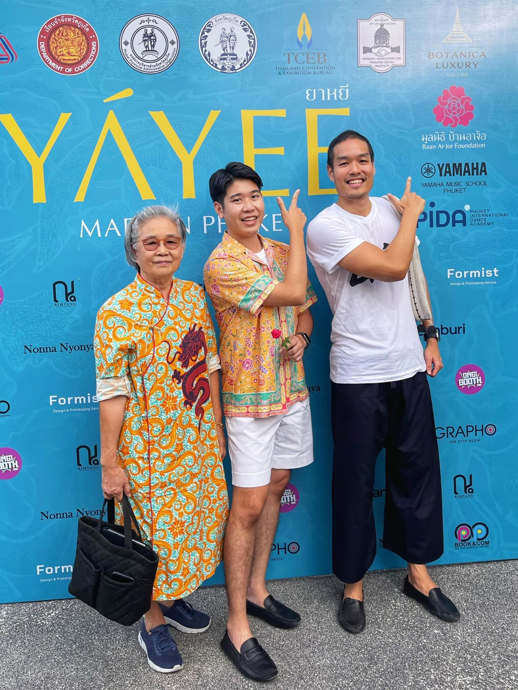

2566 · บทบาท · เหตุการณ์
ร่วมงาน Yayee 7th Year of Love ระดมทุนชุดนักเรียนและจักรเย็บผ้า

ขอบคุณน้องภูมิ น้องคนเก่งจาก #yayee 👑
วันนี้วันดี 2/7/23 แดดเปรี้ยงสะใจ (ขอพรแทบทุกสิ่งศักดิ์สิทธิ์ 😅) ให้งาน Yayee 7th year of love ราบรื่น เพื่อระดมทุนซื้อชุดนักเรียนให้นักเรียนที่ต้องการโอกาส แต่ขาดแคลนทุนทรัพย์ และสร้างงานสร้างอาชีพให้กับผู้ต้องขังเรือนจำ
วันนี้ตั่วโก๊รับบทพนักงานเชียร์แหลก ทั้งไอติม #torry มาพร้อมไอติม 4 รส 😋 หร่อยสุดๆๆๆ และ น้ำอ้อยเจ้มจ้น #chalongbay แค่ซักกรึ๊บก็ฟินนน 🥹✨
เงินรายได้ไอติมทั้งหมด สมทบทุนมูลนิธิบ้านอาจ้อซื้อชุดนักเรียน ❤️
รายได้น้ำอ้อยเจ้มจ้นทั้งหมดสมทบทุนโรตารีเหมืองแร่ซื้อจักรเย็บผ้าผู้ต้องขังเรือนจำ 💪
งานนี้ไม่ใช่ได้แค่บุญ แต่ดีใจที่ได้แสดงวัฒนธรรมเสื้อผ้าบ้านเรายกระดับผ่าน brand ของคนภูเก็ต ให้เป็นที่รู้จักถึงระดับนานาชาติ 🎉
ขอบคุณและร่วมอนุโมทนากับทุกคนด้วยนะครับ 😇
ปล ผู้สนับสนุนเยอะ และงานใหญ่กว่าที่คิดไว้มากกก
#มูลนิธิบ้านอาจ้อ 💕
#บ้านอาจ้อ ❤️